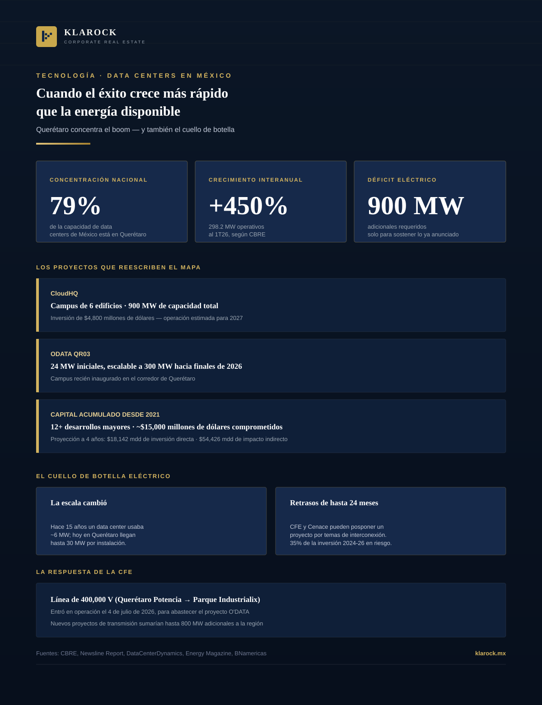

Technology · 2026-08-12
Data Centers in Mexico: When Success Grows Faster than the Power Supply
Querétaro holds 79% of Mexico's data center capacity and grew 450% in a single year. CloudHQ is investing $4.8B in a 900 MW campus. But the power grid has already hit its limit — reshaping industrial real estate across the Bajío.

No other segment of Mexico's industrial real estate market has grown as fast over the past two years as the data center. Driven by the global AI boom, the mass migration to the cloud, and the nearshoring of digital services, Mexico has become one of Latin America's most dynamic colocation markets. But in 2026, that explosive growth ran into an obstacle no investment announcement can decree away: the capacity of the electrical grid.
1. Querétaro: the absolute epicenter
- —Unprecedented concentration: according to CBRE, Querétaro holds 79% of Mexico's installed data center capacity, with 298.2 MW operational as of Q1 2026.
- —Explosive growth: that volume represents a 450.2% year-over-year increase, driven by hyperscale deployments and AI training workloads.
- —2030 target: the state is projecting up to 1,120 MW of capacity within the next four years.
2. The projects redrawing the map
- —ODATA QR03: the newly inaugurated campus opens with 24 MW and is designed to scale up to 300 MW by late 2026.
- —CloudHQ: is investing $4.8 billion in a six-building campus with total capacity of 900 MW, with operations expected to begin in 2027.
- —Accumulated capital: since 2021, at least 12 major developments have committed roughly $15 billion in the state. Projected investment over the next four years reaches $18.142 billion, with an estimated indirect economic impact of $54.426 billion.
3. The bottleneck: the power grid
- —A physical limit: the Bajío-Querétaro region is already operating at the edge of its transmission capacity. The sector needs up to 900 additional MW just to sustain the wave of projects underway.
- —The scale has shifted: fifteen years ago, a data center consumed roughly 6 MW on average; today, facilities in Querétaro operate at up to 30 MW each.
- —Real risk to investment: CFE and Mexico's National Energy Control Center (Cenace) can delay a data center's development by up to 24 months over interconnection issues. Up to 35% of industrial investments planned for 2024-2026 face risk of delay or cancellation due to lack of available power.
4. CFE's response
- —New transmission infrastructure: on July 4, 2026, CFE brought online a 400,000-volt line connecting the Querétaro Potencia substation to Parque Industrialix, dedicated to supplying the O'DATA project.
- —More capacity on the way: several medium- and high-voltage projects contemplate new lines and substations that, once operated by CFE, would add up to 800 MW of additional transmission capacity to the region.
5. What it means for industrial real estate
The data center boom can no longer be treated as an isolated tech niche: it is now one of the leading drivers of demand for high-spec industrial land in the Bajío, with power, water, and connectivity requirements that far exceed those of a traditional logistics building. For developers and investors, certified electrical interconnection availability has become as decisive as location itself when evaluating a site.
At Klarock we closely track energy availability by corridor and submarket, so we can advise every expansion or investment decision in Mexico's industrial ecosystem with real data — including the digital infrastructure segment, one of the fastest-growing and most technically complex in the sector.
Interested in this opportunity?
Reach out and a managing partner will contact you within 24 business hours.
Contact a Managing Partner